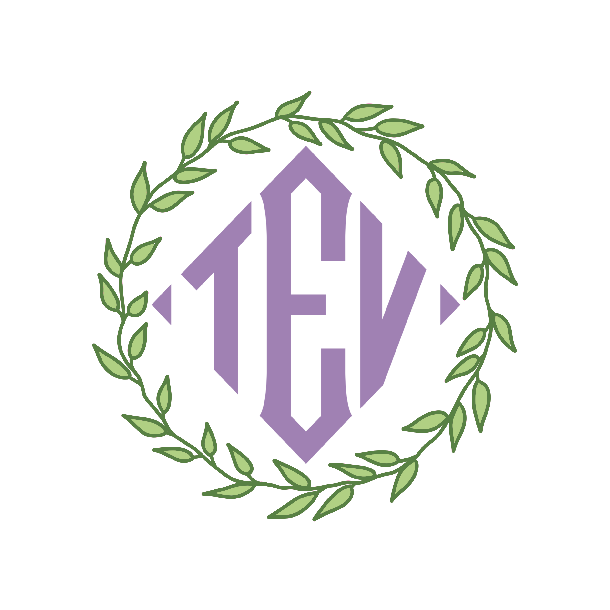

About Me; Who am I?
I am Kalan, 25 years of age, and a wannabe game developer and designer located in Leeuwarden (the Netherlands). While I went to NHL-Stenden to study HBO-ICT and specialized in Software Engineering and Game Development, my true passion lies in storywriting, especially those behind games, for example.
The reason I went the HBO-ICT route is that I have always had an affinity for computers and technology as a whole, and while I do prefer the storywriting aspect of things, I’d also love to be able to work on games based on my own stories.
On a more personal level of “about me”, I was born and raised in Leeuwarden, while my parents come from the Rotterdam area and the Hague, respectively. I am an only child, and for the last 9 years, I’ve been living on my own in the city. In my spare time, I spend a lot of time socializing with those near and dear to me, like my relationship partners and friends, and besides that, I play a lot of video games, write stories, and watch some TV. I also do volunteer work at COC, specifically for their Cocktail department, which involves organizing meetings for LGBTQ+ refugees within Friesland. On that note, I’ve been out of the closet since 2016, and find joy in discussing the pedantics of the queer communities I find myself a part of.
More About Me (HackLab specific)
The reason I ended up at HackLab was simply that it was the most convenient and logical option within those offered to me by City Hall. The purpose behind it is largely to get the green light to go back to school and finish the last year of my studies without losing my monetary benefits, as well as to refresh a lot of the knowledge I learned all those years ago, but haven’t used in over 5 years.
Aside from that, the added bonus is that I might acquire connections and insights into the professional ICT world, which I don’t know much about. The main thing I need to finish at my study is the work exchange, for which I’m sure I’ll find some useful information while I'm at HackLab, and if nothing else, hopefully find a suitable place to do said work exchange.
While not exactly related to HackLab, one of the things I’d love to learn comes back to when I was in my third year at HBO-ICT, and took a minor in CMD, namely “Game Development and 3D. Here I had the chance to lean more into the creative aspect of things, rather than the software development. It’s here that I learned my largest weakness in my goals, my utter lack of skill in the visual arts. While I have a good eye for story development and plot handling, I am terrible at drawing or sketching, let alone proper 2D or 3D art. While I have the vision, I lack the skill to illustrate it to others. Again, this is not something I could quite learn within HackLab, but it is something I want to work on, at some point.
More specifically to HackLab, however, I don’t have anything in particular that I wish to learn. I see this more as a place to build some structure in my life, and refresh the knowledge I’ve learned in years past that has sunk into the depths of my memory. That's not to say that I can't or won't learn anything during my time at HackLab, but just that there's nothing in specific I'm looking for in that regard.
As comes as a surprise to no one, the biggest challenges for me regarding HackLab are those that I have with regular school or work as well.
Firstly, for as long as I can remember, I’ve had many issues with my sleep, most notably getting to sleep and waking up while not having slept long. This makes it hard to keep a rhythm, if not impossible for the most part, and can present challenges in my week-to-week life as I have to do more and more. These challenges mostly come in the form of being overly exhausted, shortening my already short attention span, and the chance of sleeping through my alarms on nights I slept particularly short.
Secondly, there are my issues with my knees, which simply make it a challenge to sit behind an unoptimized desk for hours on end, to walk up the stairs, and even to get to places multiple times a week or day. So far, it’s been mostly manageable, but I’m noticing I’m starting to struggle more and more with being able to get where I need to be, when I need to be there. Especially the staircases are becoming much harder at this point, as well as sitting still(ish) for long periods of time.
Whilst not particularly difficult or daunting, I do find it hard to stay motivated for things within HackLab when they don’t align with my immediate goals or wants. For example, looking into job applications just doesn’t interest me right now, as I’m not intending to get a job, but rather go back to school. Similarly, staying invested in web development is not exactly easy either. Between the varying mental disorders and issues I have, it’s not always easy to stay focused or engaged with those subjects and assignments, as I just don’t care for it.
So far, the latter bit has been going well enough, but I find myself cutting corners and not delivering the quality I know I’m capable of, and finding it hard to motivate myself to actually work on it. Even as I’m writing all this, it’s merely to distract myself from the fact that I’ve not finished the technical parts of the website, and I’m procrastinating working on it, even while it’s the night before at this moment
When it comes to the immediate future, it looks like it’s mostly a case of needing to find the right motivations and discipline to keep working on things as time goes on, as well as maybe finding a way to let my creativity flow through these assignments in a way that works for me.
Aside from that, the practical challenges that come with HackLab for me, like my knees and sleep issues, will continue needing to be addressed, as fruitless as that typically goes.
XwolfkingXD
A brief look into the creative worlds of a writer.

On each card you'll see a tag at the top, to indicate the medium of the story mentioned.
"D&D" refers to the popular Tabletop role-playing game (ttrpg) "Dungeons and Dragons" first released in 1974. After the tag follows the specific version of the game that is used.
"Discord" refers to the Discord texting platform, on which there exist many "roleplaying" communities. Roleplaying on Discord takes the form of using proxy-bots to text as if you're a certain character, and via that, it turns into this large scale co-operative writing medium. Roleplayers will often utilize different characters, and each location will be designated its own channel, to keep stories linear to a location. This way, it allows for many people to write their own stories at the same time, alone or together, and all share in the joy of storywriting.

D&D (3.5/P1)
Adentures in Eximagdra
My first Dungeons and Dragons world, build from the ground up! Inspirations were drawn largely from media like "World of Warcraft", "League of Legends", and "The Dragon Prince", but at the end of the day, it's all unique! The world of Eximagdra was my first large story creation, and to this day, holds that special spot in my heart.

Discord
The Misfits
The Misfits originated as a group of friends that met during a pandemic, wanting to create something together, and use that as a platform to work through our own issues in our own lives. It was under different leadership at first, but quickly found itself in my creative control, alongside some of my friends. Since then, it's become the infrastructure basis for many later projects, and to this day, it sees activity.

Discord
The Enchanted Vale
The Enchanted Vale finds its origin in a short story I wrote back in highschool, about a girl who discovered there was more to this world than meets the eye, about myths and legends. Transforming this short story into a Discord roleplay allowed it to grow to measures I had never anticipated, and it's been a true blessing to see this world find life in others besides myself.
D&D (5/5.5)
Tales of Arunar
Tales of Arunar was an attempt to accomodate some new friends who preferred the newer version of D&D over my preferred 3.5e. Since my original story (Eximagdra) was too connected to the rules of that version, I had to come up with a new world, and from there came Arunar. Arunar is deeply inspired by D&D 5e's official content, as to facilitate the official campaigns, but still has a lot of original content and story. It also draws quite a bit of inspiration from Critical Role, specifically in how certain things within the lore are set-up.
Discord
Within This World's Borders
Within This World's Borders is a fairly new project, born from a desire to interact with new friends. It's coexistent with both Misfits and The Enchanted Vale, but caters to a different audience, some of it shared. It's set in a very different type of world, both aesthetically and narratively, and is more closely based on an existing piece of media, roughly following along with its story, albeit parallel.